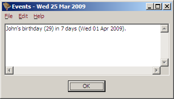

Day of the Month
Day of the Week
Month
Year
Lead Time
Event Text
Running BDay Automatically Under Linux
Each event is on a single line, comprised of the following components:
day mon [year] [lead_time] text
The first component is either the day of the month or the day of the week, followed by the month. This is followed optionally by a year, and an optional lead time, and finally by the text of the event.
For the day of the month, it can be either:
For the day of the week, it will be one of Mon, Tue, Wed, Thu, Fri, Sat or Sun to indicate the day of the week, followed by either a positive or negative number to indicate which week in the month in which the event occurs.
Examples:
The first Monday of the month.
MonAlso first Monday of the month.
Mon+1The second Monday of the month.
Mon+2The last Friday of the month.
Fri-1The second last Friday of the month.
Fri+2
It is important that there be no spaces between the day name and the number following it.
If you specify the fifth day of the week in a month, such as the fifth Monday of the month, and the month only contains four Mondays in the current year, the event will not be displayed for that year.
The month is one of Jan, Feb, Mar, Apr, May, Jun, Jul, Aug, Sep, Oct, Nov or Dec, indicating which calendar month the event occurs.
It is possible to have an event that occurs in more than one month, either by specifying a range, or as discreet list. For example:
An event occurring on the last Friday in March, June, September and December:
Fri-1 Mar,Jun,Sep,Dec Prepare quarterly reportsAn event that occurs in the first day of the month for the first half of the year:
1 Jan-Jun This is the first half of the yearAn event that occurs on the first Monday in January, February, March and August
Mon Jan-Mar,Aug The odd event
Again, no spaces should be between the months, only commas or hyphens.
If a year is specified, then the number of years between the current year and the year of the event is displayed in parenthesis.
Example: For the event:
1 Apr 1980 John's birthday
In the year 2009, it would be displayed with a “29” in parenthesis:
If you wanted an event that only occurred in a specific year, put a “+1” after the year (no spaces). For example:
27 Dec 2009+1 Public holiday for Christmas
If you wanted an event to only occur for two years in a row, you could put a “+2”, a “+3” for three years, and so on.
By default, events are displayed from five days before they occur. You can
change this for a specific event by specifying the number of days warning after
the year. For example, if you had
“1 Apr 1980 10 John's birthday”
then on the 25th of March you would see:

If you want to use a default lead time other than five days, you can change it by putting the following in the event file:
lead time n
Where “n” is the number of days lead time
you want by default. All events specified after this line will have the new
lead time by default.
This is simply the text to be displayed for the event. It can pretty much be anything, although it is probably a good idea to avoid starting the event text with a number or it could get misinterpreted as a year or the desired lead time.